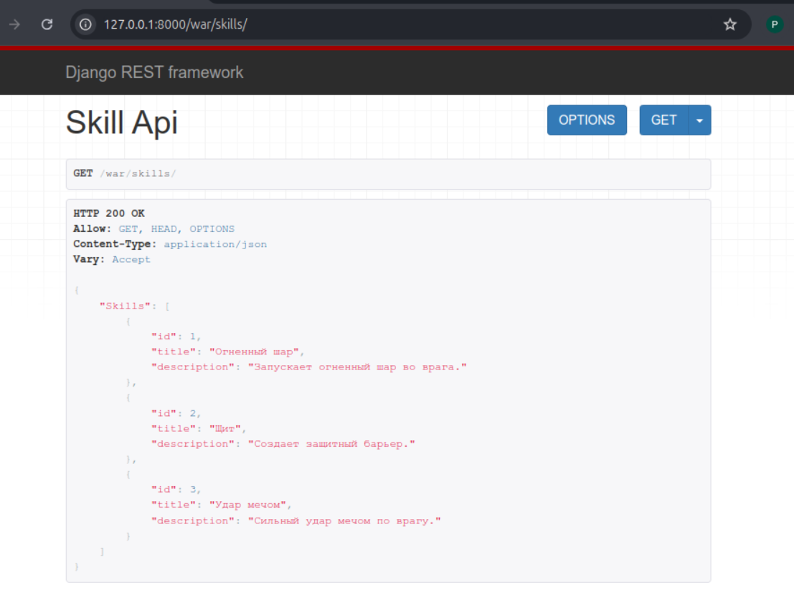
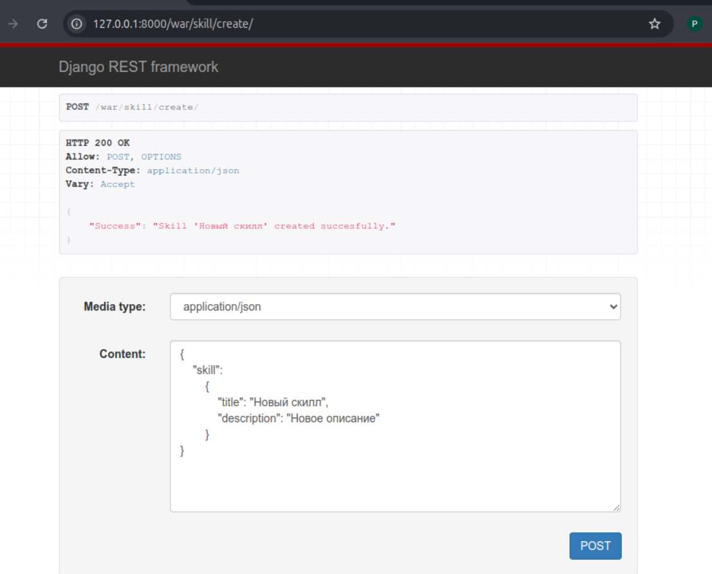
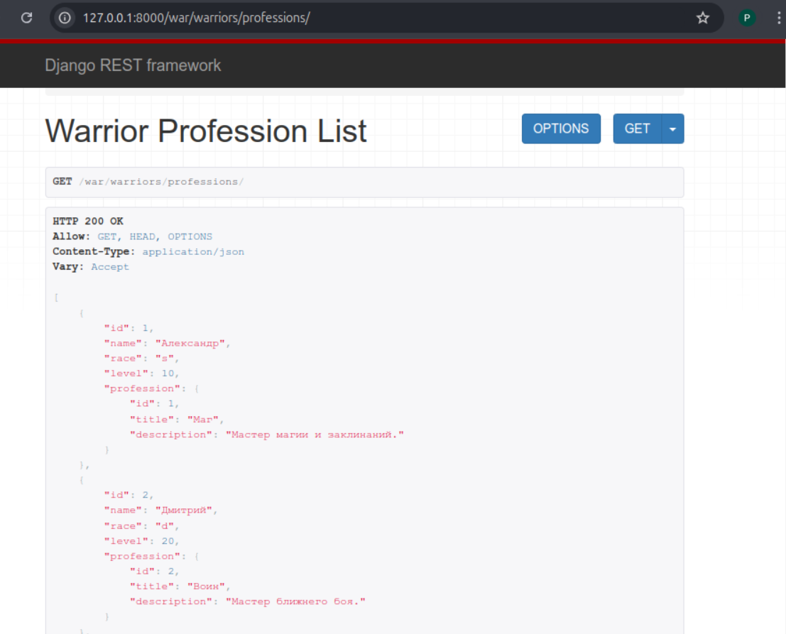
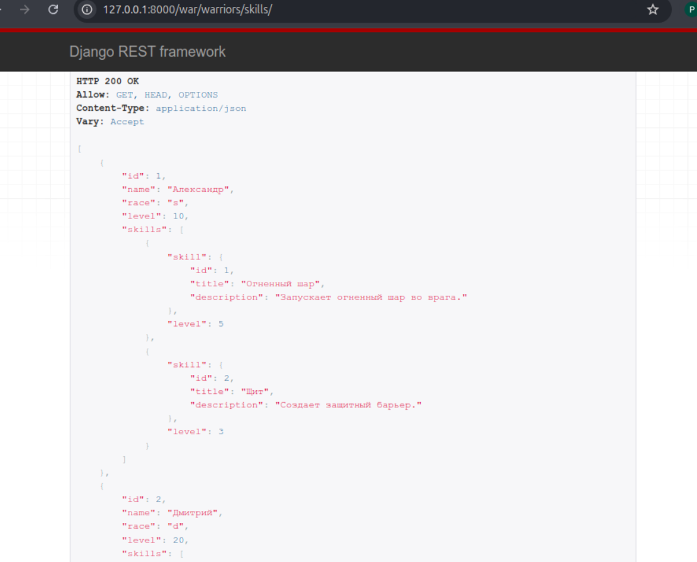
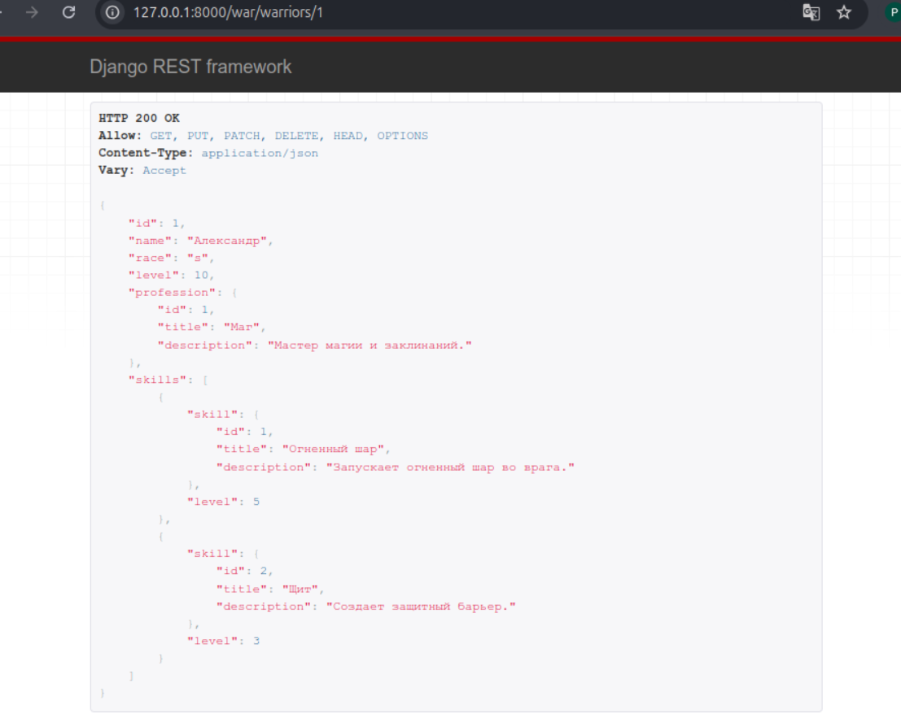
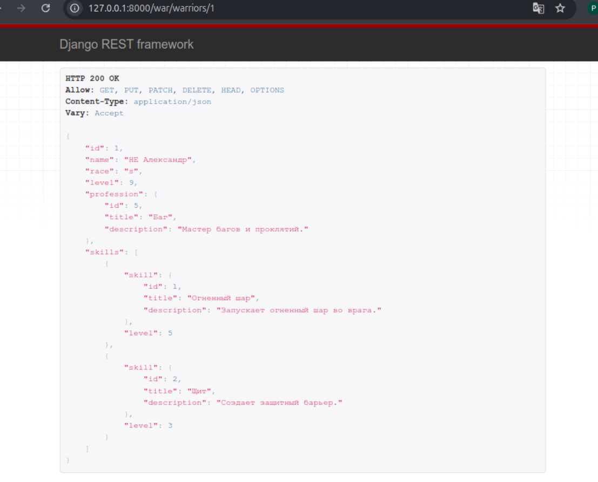
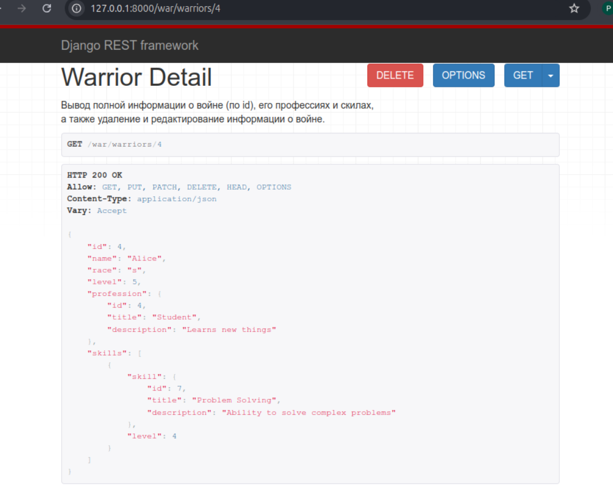
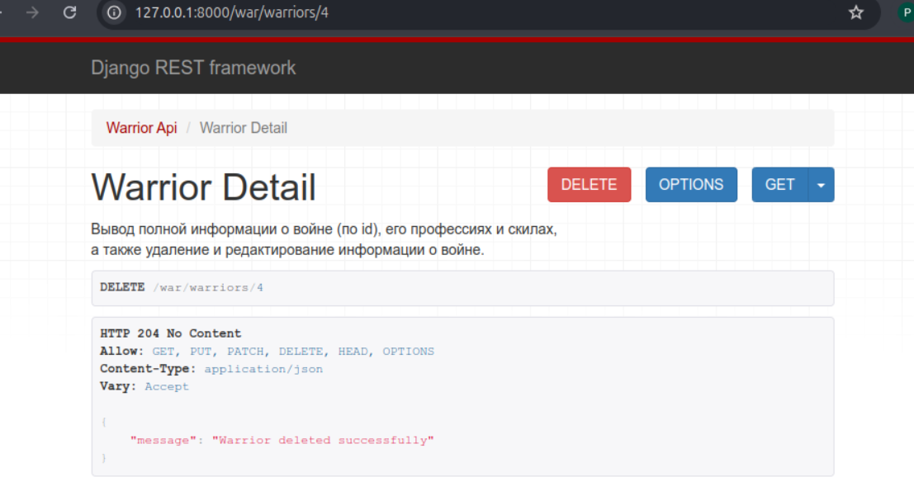

Отчет по практической работе №3.2
Ход работы
Реализовать ендпоинты для добавления и просмотра скиллов
Добавили следующий код в serializers.py:
'''python
class SkillSerializer(serializers.ModelSerializer):
class Meta:
model = Skill
fields = "__all__"
class SkillCreateSerializer(serializers.Serializer):
title = serializers.CharField(max_length=120)
description = serializers.CharField()
def create(self, validated_data):
skill = Skill(**validated_data)
skill.save()
return skill
'''
Добавили следующий код в views.py:
'''python
class SkillAPIView(APIView):
def get(self, request):
skills = Skill.objects.all()
serializer = WarriorSerializer(skills, many=True)
return Response({"Skills": serializer.data})
class SkillCreateView(APIView):
def post(self, request):
skill = request.data.get("skill")
serializer = SkillCreateSerializer(data=skill)
if serializer.is_valid(raise_exception=True):
skill_saved = serializer.save()
return Response({"Success": "Skill '{}' created succesfully.".format(skill_saved.title)})
'''
Добавили следующий код в urls.py:
'''python
path('/skills/', SkillAPIView.as_view()),
path('skill/create/', SkillCreateView.as_view()),
'''
Проверка работы:


Вывод полной информации о всех воинах и их профессиях (в одном запросе).
Добавили следующий код в serializers.py:
'''python
class WarriorProfessionSerializer(serializers.ModelSerializer):
profession = ProfessionSerializer()
class Meta:
model = Warrior
fields = ['id', 'name', 'race', 'level', 'profession']
'''
Добавили следующий код в views.py:
'''python
class WarriorProfessionListView(ListAPIView):
queryset = Warrior.objects.select_related('profession').all()
serializer = WarriorProfessionSerializer
'''
Добавили следующий код в urls.py:
'''python
path('warriors/professions/', WarriorProfessionListView.as_view()),
'''
Проверка работы:

Вывод полной информации о всех воинах и их скиллах (в одном запросе).
Добавили следующий код в serializers.py:
'''python
class WarriorSkillsSerializer(serializers.ModelSerializer):
skills = SkillOfWarriorSerializer(source='skillofwarrior_set', many=True)
class Meta:
model = Warrior
fields = ['id', 'name', 'race', 'level', 'skills']
'''
Добавили следующий код в views.py:
'''python
class WarriorSkillsListView(ListAPIView):
queryset = Warrior.objects.prefetch_related('skill').all()
serializer_class = WarriorSkillsSerializer
'''
Добавили следующий код в urls.py:
'''python
path('warriors/skills/', WarriorSkillsListView.as_view()),
'''
Проверка работы:

Вывод полной информации о воине (по id), его профессиях и скиллах.
Добавили следующий код в serializers.py:
'''python
class WarriorDetailSerializer(serializers.ModelSerializer):
profession = ProfessionSerializer()
skills = SkillOfWarriorSerializer(source='skillofwarrior_set', many=True)
class Meta:
model = Warrior
fields = ['id', 'name', 'race', 'level', 'profession', 'skills']
def update(self, instance, validated_data):
# Обновляем простые поля
instance.name = validated_data.get('name', instance.name)
instance.race = validated_data.get('race', instance.race)
instance.level = validated_data.get('level', instance.level)
# Обновляем профессию
profession_data = validated_data.pop('profession', None)
if profession_data:
profession, _ = Profession.objects.get_or_create(**profession_data)
instance.profession = profession
# Обновляем навыки
skills_data = validated_data.pop('skillofwarrior_set', [])
if skills_data:
# Удаляем старые записи навыков
instance.skillofwarrior_set.all().delete()
# Создаем новые записи навыков
for skill_data in skills_data:
skill_info = skill_data.pop('skill')
skill, _ = Skill.objects.get_or_create(**skill_info)
SkillOfWarrior.objects.create(
warrior=instance,
skill=skill,
level=skill_data.get('level', 0)
)
instance.save()
return instance
'''
Добавили следующий код в views.py:
'''python
class WarriorDetailView(RetrieveUpdateDestroyAPIView):
"""
Вывод полной информации о войне (по id), его профессиях и скилах,
а также удаление и редактирование информации о войне.
"""
queryset = Warrior.objects.select_related('profession').prefetch_related('skill')
serializer_class = WarriorDetailSerializer
def delete(self, request, *args, **kwargs):
instance = self.get_object()
self.perform_destroy(instance)
return Response({'message': 'Warrior deleted successfully'}, status=HTTP_204_NO_CONTENT)
'''
Добавили следующий код в urls.py:
'''python
path('warriors/<int:pk>', WarriorDetailView.as_view()),
'''
Проверка работы:

Редактирование информации о воине.
Проверка работы:

Удаление воина по id.
Проверка работы:

